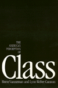
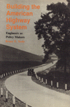
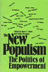
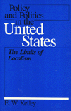
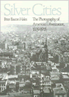

| 
|
The
American Perception of Class
Vanneman, Reeve, and Lynn Weber Cannon
This provocative book presents a new vision of the American working
class
384 pp • 6x9 • Spring 1987
cloth 0-87722-436-6
EAN 978-0-87722-436-5
|
|
|
Between
Women
Domestics and Their Employers
Rollins, Judith
A study of the unique relationship between women employers and
employees
256 pp • 5.5x8.25 • Fall 1985
paper 0-87722-491-9
EAN 978-0-87722-491-4
cloth 0-87722-383-1
EAN 978-0-87722-383-2
|
| 
|
Building
the American Highway System
Engineers As Policy Makers
Seely, Bruce E.
How the Bureau of Public Roads played a central role in the development
of the national highway system
312 pp • Spring 1987
cloth 0-87722-472-2
EAN 978-0-87722-472-3
|
|
|
Choosing
Equality
The Case for Democratic Schooling
Bastian, Ann, Norm Fruchter, Marilyn Gittell, Kenneth Haskins, Colin
Greer, and James P. Comer
A comprehensive critique of education and the current reforms covering
instruction and the institution
New in Paperback!
222 pp • 5.5x8.25 • Fall 1986
paper 0-87722-454-4
EAN 978-0-87722-454-9
|
| 
|
Controlling
the Federal Bureaucracy
Riley, Dennis D.
A probing study examines the relationships between the federal
bureaucracy and the elements of society it is intended to serve
216 pp • Spring 1987
cloth 0-87722-455-2
EAN 978-0-87722-455-6
|
|
|
Democratic
Liberalism and Social Union
Pinkard, Terry
Defends a community oriented conception of democratic liberalism
based on Hegelian and contemporary German jurisprudential theory
240 pp • Spring 1987
cloth 0-87722-458-7
EAN 978-0-87722-458-7
|
| |
Digging Our Own Graves
Coal Miners and the Struggle over Black
Lung Disease
Smith, Barbara Ellen
How miners took up their own cause and forced others to acknowledge
the truth about their work environment
240 pp • Spring 1987
cloth 0-87722-451-X
EAN 978-0-87722-451-8
|
| |
Empire Without Tears
America's Foreign Relations, 1921-1933
Cohen, Warren I.
This highly accessible study presents a fresh interpretation of
U.S. foreign policy during the "Republican era"
152 pp • Spring 1987
cloth 0-87722-490-0
EAN 978-0-87722-490-7
|
|
|
Families
and Work
Gerstel, Naomi, and Harriet Engel Gross, eds.
Analyzing the connections between work and family
576 pp • Spring 1987
paper 0-87722-469-2
EAN 978-0-87722-469-3
cloth 0-87722-467-6
EAN 978-0-87722-467-9
|
| |
A Good Look at Evil
Rosenthal, Abigail L.
A narrative view of good and evil
264 pp • Spring 1987
cloth 0-87722-456-0
EAN 978-0-87722-456-3
|
| |
Identity and Community on the Alaskan Frontier
Cuba, Lee J.
The American frontier continues to live in the landscape of contemporary
Alaska
224 pp • Spring 1987
cloth 0-87722-457-9
EAN 978-0-87722-457-0
|
| |
The Legal Philosophy of H.L.A Hart
A Critical Appraisal
Martin, Michael
The most extensive critical evaluation of the legal philosophy
of H.L.A Hart, one of the most significant legal philosophers in
the English-speaking world
336 pp • Spring 1987
cloth 0-87722-471-4
EAN 978-0-87722-471-6
|
|
|
Liberation
Theology
Essential Facts About the Revolutionary Religious Movement in
Latin America and Beyond
Berryman, Phillip
How does the church function in Latin America on an everyday, practical,
and political level?
240 pp • Spring 1987
cloth 0-87722-479-X
EAN 978-0-87722-479-2
|
|
|
Marx,
Reason, and the Art of Freedom
Brien, Kevin M.
A systematic exploration of the problem of freedom in Marx
288 pp • Spring 1987
cloth 0-87722-466-8
EAN 978-0-87722-466-2
|
| 
|
The
New Populism
The Politics of Empowerment
Boyte, Harry C., and Frank Riessman, eds.
Can populism revive a spirit of idealism and hope for democratic
change?
New in Paperback!
336 pp • Fall 1986
paper 0-87722-449-8
EAN 978-0-87722-449-5
|
|
|
Normative
Politics and the Community of Nations
Fain, Haskell
Proposes an alternative theory to contractarianism, one that does
not assume that war is normal
272 pp • Spring 1987
cloth 0-87722-476-5
EAN 978-0-87722-476-1
|
| |
On Sharing Fate
Care, Norman S.
How should "self-responsiblity" and "other-responsibility"
be interpreted and arranged?
272 pp • Spring 1987
cloth 0-87722-473-0
EAN 978-0-87722-473-0
|
|
|
Organizing
the Movement
The Roots and Growth of ACORN
Delgado, Gary
The inner-workings of ACORN, the Association of Community Organization
for Reform Now
256 pp • Fall 1985
paper 0-87722-492-7
EAN 978-0-87722-492-1
cloth 0-87722-393-9
EAN 978-0-87722-393-1
|
| 
|
Policy
and Politics in the United States
The Limits of Localism
Kelly, E. W.
Examines the government's methods and goals accounting for the
emerging centrism of policy formation
416 pp • Spring 1987
paper 0-87722-268-1
EAN 978-0-87722-268-2
cloth 0-87722-267-3
EAN 978-0-87722-267-5
|
|
|
Policy
and Politics in West Germany
The Growth of a Semisoverign State
Katzenstein, Peter J.
Examines in detail how West German policy and politics interrelate
464 pp • Spring 1987
paper 0-87722-264-9
EAN 978-0-87722-264-4
cloth 0-87722-263-0
EAN 978-0-87722-263-7
|
|
|
Policy-Planning
Organizations
Elite Agendas and America's Rightward Turn
Peschek, Joseph G.
Explores neglected terrain in American politics
288 pp • Spring 1987
cloth 0-87722-468-4
EAN 978-0-87722-468-6
|
| |
Public Housing, Race, and Renewal
Urban Planning in Philadelphia, 1920-1974
Bauman, John F.
How did the communitarian vision of economical, safe, and sanitary
housing fall apart?
264 pp • Spring 1987
cloth 0-87722-444-7
EAN 978-0-87722-444-0
|
| 
|
Silver
Cities
The Photography of American Urbanization, 1839-1915
Hales, Peter Beacon
Chronicling the change in city photography from 1839 to 1915
New in Paperback!
315 pp • Fall 1983
paper 0-87722-399-8
EAN 978-0-87722-399-3
|
|
|
| 
|
Wash
and Be Healed
The Water-Cure Movement and Women’s Health
Cayleff, Susan E.
An exploration of the relationship between hydrotherapy and the
women who took the cure
257 pp • Spring 1987
cloth 0-87722-462-5
EAN 978-0-87722-462-4
|
|
|
Women
of the New Right
Klatch, Rebecca E.
The first coherent picture of who joins such movements as the New
Right and how they think
264 pp • Spring 1987
cloth 0-87722-470-6
EAN 978-0-87722-470-9
|
|
|
Women
of the Upper Class
Ostrander, Susan A.
Although these women are economically and socially powerful, they
are for the most part unliberated
New in Paperback!
Spring 1984
paper 0-87722-475-7
EAN 978-0-87722-475-4
|
| 
|
The
Women's Movements of the United States and Western Europe
Consciousness, Political Opportunity, and Public Policy
Katzenstein, Mary Fainsod, and Carol McClurg Mueller, eds.
Fills a gap in feminist scholarship by focusing on women’s
movements and the different opportunities their political environments
provide
366 pp • 6x9 • Spring 1987
cloth 0-87722-463-3
EAN 978-0-87722-463-1
|
|
|
Worker
Participation and the Politics of Reform
Sirianni, Carmen, ed.
The latest research on worker participation
384 pp • Spring 1987
cloth 0-87722-464-1
EAN 978-0-87722-464-8
|